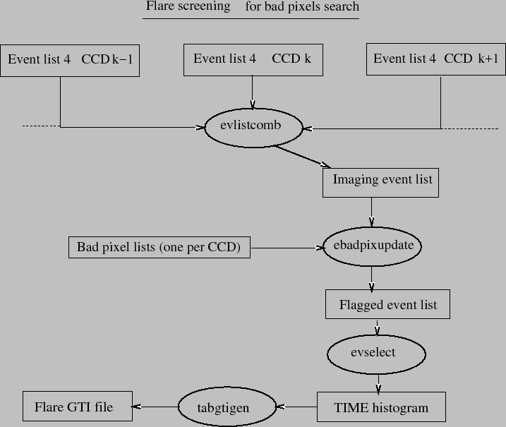

In most cases relying on the bad pixels
registered in the CCF is not enough. This is because
the CCF stores only the bright pixels of relatively high occurrence,
but bright pixels at a low level may be a nuisance as well.
If badpixfindalgo=EM (default) or EP,
the whole analysis of one exposure
(Fig 1)
is run first with emevents
and emenergy
in a simplified mode,
and skipping badpix
and attcalc.
Then one of two bad pixel finding algorithms is called
(Fig 3), depending on
badpixfindalgo.
|  |
If part of the exposure is affected by flares, this can seriously reduce the power of the bad pixels search (flares act as noise for the bad pixels and make detecting them more difficult). Therefore an intermediate flare screening (like in Sect. 3.3) is necessary (Fig 4). The bright pixels (which can perturb the flare screening) are flagged using ebadpixupdate. The resulting files are used to generate Good Time Intervals outside flares. Those Good Time Intervals are exposure specific whatever the value of globalflare. Then the bad pixel search is run a second time on the data outside flares, in incremental mode.
For badpixfindalgo=EM (or not set), the algorithm is called a third time (incrementally) on energies below 500 eV (and after flare screening), unless lowenerbadpix=N. This sometimes detects bad pixels more easily, because most appear at low energy.
The resulting bad pixels file is then used by badpix in the main pass on the data (Fig 1). Bad pixels declared in the CCF are read as well, and merged with those found in the local search. This second pass restarts just after emframes. The stopafterbadpixfind parameter allows to stop emchain before the main pass, to investigate in detail how the bad pixels detection worked.
If badpixfindalgo is set to NO, then the first loop is not done and the bright pixels are read from the CCF.